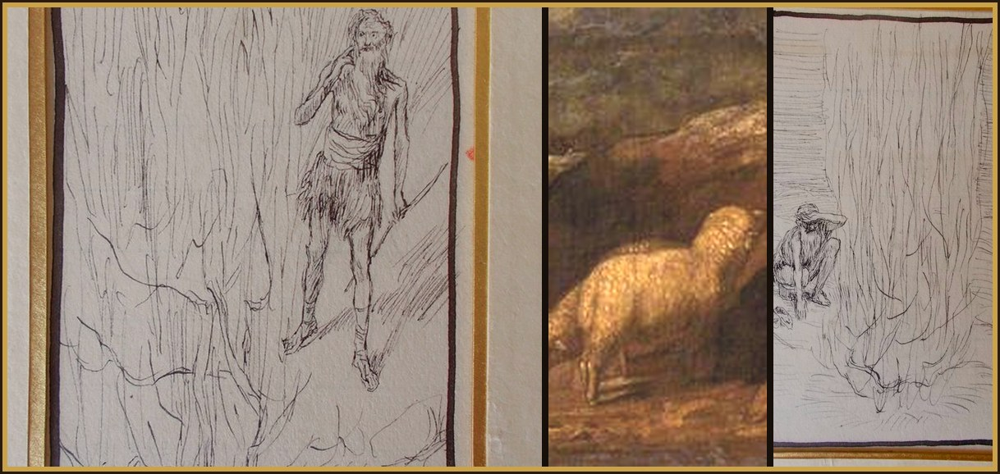

Intention the favor I place in your hands
1Now Moses was pasturing the sheep of his father-in-law Jethro, a priest of Midian. And when he had driven the flock into the interior of the desert, he came to the mountain of God, Horeb. 2And the Lord appeared to him in a flame of fire from the midst of a bush. And he saw that the bush was burning and was not burnt. 3Therefore, Moses said, “I will go and see this great sight, why the bush is not burnt.” 4Then the Lord, discerning that he proceeded on to see it, called to him from the midst of the bush, and he said, “Moses, Moses.” And he responded, “Here I am.” 5And he said: “Lest you should approach here, remove the shoes from your feet. For the place on which you stand is holy ground.” 6And he said, “I am the God of your father: the God of Abraham, the God of Isaac, and the God of Jacob.” Moses hid his face, for he dared not look directly at God.

_for_Brunoff_102_Mo%C3%AFse_et_le_buisson_ardent.jpg){kind=link}
_-_Moses_and_the_Burning_Bush_-_1257137_-_National_Trust.jpg){kind=link}
_for_Brunoff_103_Mo%C3%AFse_adore_le_buisson_ardent.jpg){kind=link}
7And the Lord said to him: “I have seen the affliction of my people in Egypt, and I have heard their outcry because of the harshness of those who are over the works. 8And knowing their sorrow, I have descended in order to free them from the hands of the Egyptians, and to lead them from that land into a good and spacious land, into a land which flows with milk and honey, to the places of the Canaanite, and Hittite, and Amorite, and Perizzite, and Hivite, and Jebusite. 9And so, the outcry of the sons of Israel has come to me. And I have seen their affliction, with which they are oppressed by the Egyptians. 10But come, and I will send you to Pharaoh, so that you may lead my people, the sons of Israel, out of Egypt.” 11And Moses said to God, “Who am I that I should go to Pharaoh and that I should lead the sons of Israel out of Egypt?” 12And he said to him: “I will be with you. And you will have this as a sign that I have sent you: When you will have brought my people out of Egypt, you will offer sacrifice to God upon this mountain.” 13Moses said to God: “Behold, I will go to the sons of Israel, and I will say to them, ‘The God of your fathers has sent me to you.’ If they say to me, ‘What is his name?’ What shall I say to them?” 14God said to Moses, “I AM WHO AM.” He said: “Thus shall you say to the sons of Israel: ‘HE WHO IS has sent me to you.’ ” 15And God said again to Moses: “Thus shall you say to the sons of Israel: ‘The Lord God of your fathers, the God of Abraham, the God of Isaac, and the God of Jacob, has sent me to you.’ This is the name for me in eternity, and this is my memorial from generation to generation. 16Go and gather together the elders of Israel, and you shall say to them: ‘The Lord God of your fathers, the God of Abraham, the God of Isaac, and the God of Jacob, has appeared to me, saying: When visiting, I have visited you, and I have seen all that has befallen you in Egypt. 17And I have spoken in order to lead you out of the affliction of Egypt, into the land of the Canaanite, and Hittite, and Amorite, and Perizzite, and Hivite, and Jebusite, into a land flowing with milk and honey.’ 18And they shall hear your voice. And you shall enter, you and the elders of Israel, to the king of Egypt, and you shall say to him: ‘The Lord God of the Hebrews has called us. We shall go three days’ journey into the wilderness, in order to offer sacrifice to the Lord our God.’ 19But I know that the king of Egypt will not release you, unless you go out by a powerful hand. 20For I will extend my hand, and I will strike Egypt with all my wonders that I will do in the midst of them. After these things, he will release you. 21And I will grant favor to this people in the sight of the Egyptians. And so, when you go forth, you shall not go out empty. 22But every woman shall ask of her neighbor and of her hostess vessels of silver and of gold, as well as garments. And you shall set them upon your sons and daughters, and you shall despoil Egypt.”
Moses turns aside for a bush that burns and is not burnt. God calls him by name from the middle of it and says he has seen the affliction. Then he sends him to Pharaoh. Moses asks, “Who am I?” God does not hand him a stronger self. He says he will be with him, and he gives the name: I AM WHO AM. HE WHO IS sends him. The call is God attaching his own presence to a man who was content with the flock.
- What ordinary thing have you walked past that you were meant to turn aside for?
- When you say “Who am I to do this?”, are you waiting for a better self, or for “I will be with you”?
The First Glorious Mystery - The Resurrection
Fruit: Faith · John 20:1
O Glorious Mother Mary,
meditating on the Mystery of the Resurrection of Our Lord from the Dead, when, on the morning of the third day after His death and burial, He arose from the dead and appeared to you, dear Mother, and filled your heart with unspeakable joy; then appeared to the holy women and to His disciples, who adored Him as their risen God,
The Second Glorious Mystery - The Ascension
Fruit: Desire for Heaven · Acts 1:6
O Glorious Mother Mary,
meditating on the Mystery of the Ascension, when your divine Son, after forty days on Earth, went to Mount Olivet accompanied by His disciples, where they adored Him for the last time, after which He promised to remain with them until the end of the world; then, extending His pierced hands over them in a last blessing, He ascended into heaven,
The Third Glorious Mystery - The Descent of the Holy Spirit
Fruit: Receiving the Holy Spirit · Acts 2:1
O Glorious Mother Mary,
meditating on the Mystery of the Descent of the Holy Spirit, when, the Apostles being assembled in a house in Jerusalem, the Holy Spirit descended upon them in the form of fiery tongues, inflaming the hearts of the Apostles with the fire of divine love, teaching them all truths and giving to them the gift of tongues,
The Fourth Glorious Mystery - The Assumption of Our Blessed Mother Into Heaven
Fruit: True Devotion to You, Dear Mother · Luke 1:46
O Glorious Mother Mary,
meditating on the Mystery of your Assumption into Heaven, when, consumed with the desire to be united with your divine Son, your soul departed from your body and united itself to Him, Who, out of the excessive love He bore for you, His Mother, whose virginal body was His first tabernacle, took that body into Heaven and there, amidst the acclaims of the angels and saints, fused into it your soul,
The Fifth Glorious Mystery - The Coronation of Our Blessed Mother in Heaven as Its Queen
Fruit: Trust In Your Intercession · Revelation 12:1
O Glorious Mother Mary,
meditating on the Mystery of your Coronation in Heaven, when, upon being taken up, you were triply crowned as the August Queen of Heaven by God the Father as His beloved daughter, by God the Son as His dearest mother, and by God the Holy Spirit as His chosen spouse; the most perfect adorer of the Blessed Trinity, pleading our cause as our most powerful and merciful mother, through you,
The Thanksgiving Prayer
Hail! Queen of the Most Holy Rosary, my Mother Mary, hail! At your feet I humbly pray and offer you a crown of royal-purple roses, to remind you of your glories. Each ten bound together, recalling to you a glorious mystery, with my petition for a particular grace. O Holy Queen, dispenser of God’s graces and mother of all who invoke your holy name. Do not look upon my gift and fail to see its binding. As you graciously receive my gift, I kindly implore you to receive my thanksgiving; from your bounty you have granted me the favor I so trustingly sought. I despaired not of what I ask of thee, and thou has truly shown thyself my Mother!
Prayer in Thanksgiving
Sweet Mother Mary, I offer you this Spiritual Communion to bind my bouquets in a wreath to place upon your brow in thanksgiving for the favor I place in your hands.
Day 3
How many things I do when the soul, in so much spiritual and material need, turns to me, looks at me and says to me, “You take care of it,” then closes its eyes and rests. In pain you pray for me to act, but that I act in the way you want. You do not turn to me, instead, you want me to adapt to your ideas. You are not sick people who ask the doctor to cure you, but rather sick people who tell the doctor how to. So do not act this way, but pray as I taught you in the Our Father: “Hallowed be thy Name,” that is, be glorified in my need. “Thy kingdom come,” that is, let all that is in us and in the world be in accord with your kingdom. “Thy will be done on Earth as it is in Heaven,” that is, in our need, decide as you see fit for our temporal and eternal life. If you say to me truly: “Thy will be done,” which is the same as saying: “You take care of it,” I will intervene with all my omnipotence, and I will resolve the most difficult situations.
Ten times
O Jesus, I surrender myself to you, take care of everything!
To Our Lady
Mother, I am yours now and forever. Through you and with you I always want to belong completely to Jesus.